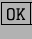
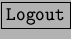
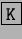

Una de las primeras cosas que quizás uno quiera hacer para sentirse más cómodo en el escritorio, es configurarlo para que use el mismo idioma que uno habla.
Generalmente el KDE está configurado por defecto para usar el idioma Inglés, para cambiarlo, se debe cargar el KDE Control Center, desplegar la categoría Desktop, y seleccionar la opción Language, como se ve en la figura 3.2
Se tienen tres listas desplegables, en la primera seleccionar el idioma ``Spanish'', y oprimir ; el sistema avisará que se necesita reiniciar el escritorio (solamente el escritorio) para que los cambios hagan efecto, por lo tanto, el segundo paso será seleccionar la opción  del botón 3.1.
El cambio de lenguaje en el entorno KDE provee un reemplazo casi completo de idioma en el escritorio así como también en las aplicaciones KDE. De existir alguna aplicación KDE instalada sin soporte para el idioma seleccionado, el sistema asignará a esa aplicación el segundo o tercer idioma configurado en el cuadro que se muestra en la figura 3.2, por defecto se ha dejado que las aplicaciones sin soporte de Español usen el Inglés para desplegar sus mensajes.
Al volver a ingresar al entorno se podrán notar las diferencias, de ahora en adelante, se tratarán las opciones en Español.